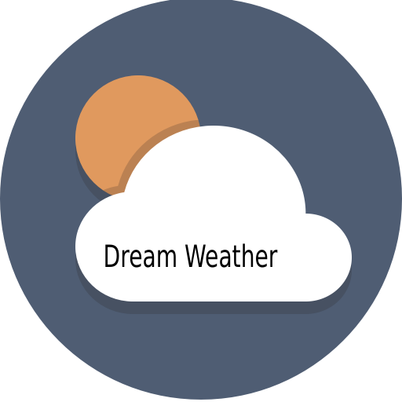
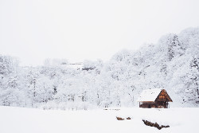
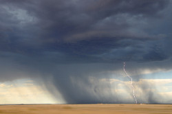
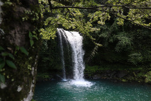

Dream Weather
A horizon full of changes
☰
Home
Preston
Soda Springs
Fish Haven
Storm Center
Gallery
Weather Gallery

Winter Japan
Canadian Rockies.
Lake Minnewanka at Sunrise.
Mountain Zermatt, Switzerland
Nature Tree Forest

Storm twister
Nimbus Cloud
Himalayas Mountain
Summer at the Beach

Waterfall in the forest